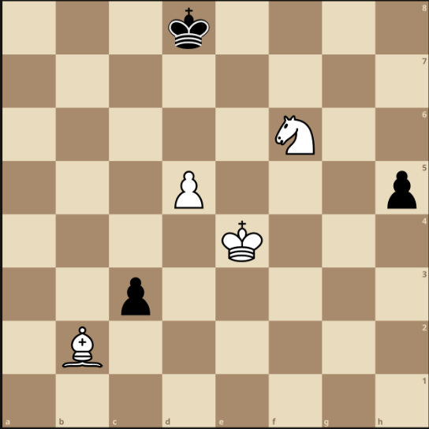

Chess-Program
by Carson Kempf
Chess Program
Scope
- Create a program that makes random valid chess moves
- Implement chess using the chess AI Framework
Objectives
- Create a model of the game state and action generation
(to be used for future AI algorithms to solve)
Overview
-
Generate all pseudo-valid moves for all of your player’s pieces in the current game state
-
Pseudo-valid == valid moves disregarding checks
Output
On Each Turn
- Print out in its own line: the number of moves available to your program
- Print out in a single line: all moves available to your player program in alphabetical order
- In the next line: print the randomly chosen move that the program returns to the chess server
- After, the program can print other stuff
Moves Printed
- In universal chess notation
Examples:
e2e4
e7e5
e1g1 (white short castling)
e7e8q (for promotion)
Sample Output
Input FEN string:
3k4/8/5N2/3P3p/4K3/2p5/1B6/8 w - - 0 23
(Corresponds to the following board…)

Output Format:
18
b2a1 b2a3 b2c1 b2c3 d5d6 e4d3 e4d4 e4e3 e4e5 e4f3 e4f4 e4f5
f6d7 f6e8 f6g4 f6g8 f6h5 f6h7
My move = b2c1
**Note: Remember the special move rules for pawns and kings **
Implementation Requirements
- Only one language framework
- Delete the frameworks that aren’t used
- Place code in
ai.pyfile
If other files are used:
- Place them in the same folder as
ai.py - Name the other files in the format
Game1*.py - Import the new file:
import games.chess.foo
Documentation
Classes
Scope
-
Should only edit file
Joueur.py/games/chess/ai.py -
Should only edit functions
make_move()andget_name()
AI
class games.chess.ai.AI(game)
- Add AI to play chess
Functions
end(won: bool, reason: str)
- Called when the game ends
returns:
- None
Parameters:
won(bool)
-
True (won)
-
False (lost)
reason(str)
-
Human readable string
-
Explains why the AI won or lost
game_updated()
-
Called every time the game’s state updates
-
For tracking (game states, trends?, ???)
returns:
- None
get_name()
-
The name sent to the server
-
The AI can control the player that is named this string
returns:
- string (The name of the player)
get_settings(key: str)
-
Gets an AI setting passed to the program
-
Through the “-aiSettings” flag
returns:
- string (Represents the value set via the command line (or none))
Flag:
Set
- Returned as a string value
Not Set
- None returned
Parameters:
key(str)
-
The key of the setting
-
We want to get the value of that specific key
make_move()
- Called every time the AI.player’s turn to make a single move
returns:
string
-
In Universal Chess Interface
-
Represents the move we want to make
-
If the move is invalid or not properly formatted, we lose the game
start()
-
Called once the game starts
-
Our AI knows its player and game
-
Initialize the AI
returns:
None
Properties
property game
- References the Game instance this AI is playing
Type:
games.chess.game.Game
property player
- References the Player this AI controls in the Game
Type:
games.chess.player.Player
Game
class games.chess.game.Game
-
Represents the Game in the Chess game
-
Traditional 8x8 chess board
Functions
get_game_object(id: str)
- Gets the game object with the given id (or returns none)
Returns:
Optional[joueur.base_game_object.BaseGameObject]
Properties
property fen
- Describes the entire state of the game board
Type:
string
property game_objects
-
Maps every game object’s ID to the actual game object
-
Used by the server and client
-
Refers to the game objects via the ID
Type:
dict[str, games.chess.game_object.GameObject]
property history
-
The list of known moves that have occurred in the game
-
In Universal Chess Interface format
-
The first element is the first move
-
The last element is the most recent move
Type:
list[str]
property players
- List of all the players in the game
Type:
list[games.chess.player.Player]
property session
- A unique identifier for the game instance that’s being played
Type:
string
GameObject
class games.chess.game_object.GameObject
-
Represents an object in chess
-
The most basic class
-
All classes inherit from automatically
Functions
log(message:str)
-
Adds a message to the GameObject’s logs
-
For debugging purposes
Returns:
None
Parameters:
message(str)
- String to add to the GameObject’s log (for debugging)
Properties
property game_object_name
-
String representation of the top level Class that the GameObject is an instance of
-
Used for reflection
-
Creates new instances on clients
-
Exposed for convenience (should AIs want this data)
Type:
string
property id
-
A unique id for each instance of a GameObject or a sub class
-
Used for client and server communication
-
Never changes value after being set
Type:
string
property logs
-
Any strings logged are stored here
-
For debugging
Type:
list[str]
Player
class games.chess.player.Player
-
Represents the player in the chess game
-
Every AI controls one player
Functions
log(message: str)
-
Adds a message to this GameObject’s logs
-
Intended for debugging
Returns:
None
Parameters:
message(str)
Properties
property client_type
-
What type of client the player is (Python in our case)
-
For data mining purposes
Type:
string
property color
-
The color of this player
-
Either “white” or “black”
-
Player “white” has the first move
Type:
“white”
“black”
property game_object_name
-
String representing the top level Class that this GameObject is an instance of
-
Used for reflection
-
Helps create new instances on clients
-
Exposed for convenience if AIs want this data
Type:
string
property id
-
Unique id for each instance of a GameObject or sub class
-
Used for client and server communication
-
Never change value after being set
Type:
string
property logs
- Any strings logged are stored here
Type:
list[str]
property lost
- If the player lost the game or not
Type:
boolean
property name
- The name of the player
Type:
string
property opponent
- This player’s opponent in chess
Type:
games.chess.player.Player
property reason_lost
- The reason why the player lost the game
Type:
string
property reason_won
- The reason why the player won the game
Type:
string
property time_remaining
- The amount of time (in ns) remaining for this AI to send commands
Type:
float
property won
- If the player won the game or not
Type:
boolean
Game Logic
- Game logic is not implemented for you
- Cadre facilitates IO between a game server and the AI
Submission
ReadyToSubmit.txt
- Change to
yes - Change to
py
Grading
- Tested with the
play.shscript - Plays the AI against itself
Do NOT edit
play.sh
Execution
./play.sh LANGUAGE_DIR SESSION_ID
./testRun MyOwnGameSession
LANGUAGE_DIR
- The directory where we are coding in:
Joueur.py
./play.sh Joueur.py testing_id
The testRun Script
-
Set up to connect to the remote host
mst-ai.xyz. -
If running locally change this to
localhost (127.0.0.1)
Server Software
-
Ignore the log files here
-
Find logs under
logs/gamelogsin the server directory (if running locally)